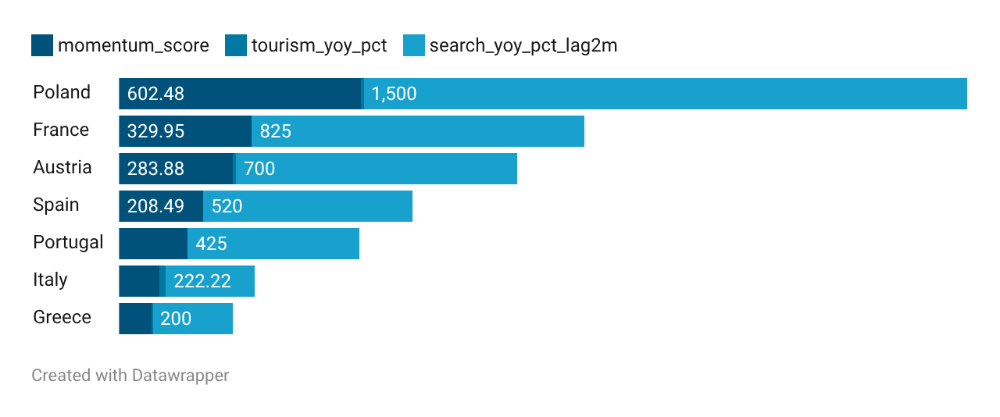
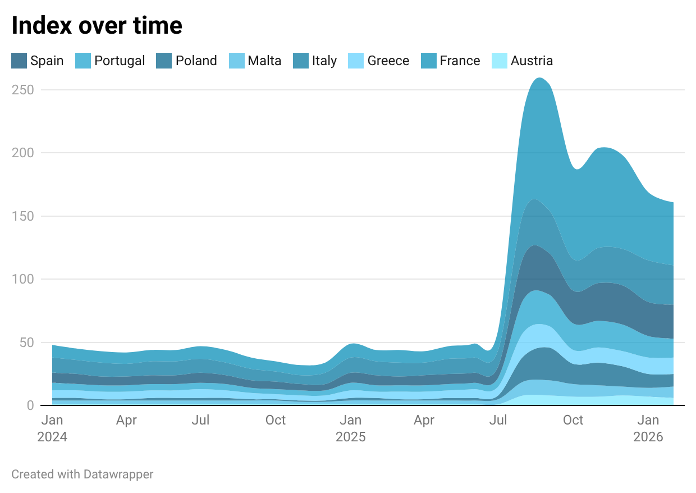

A reproducible pipeline that fuses Eurostat accommodation statistics with Google Trends flight-search signals to surface destinations rising before the official numbers catch up — built for travel media and PR teams who need data-driven destination stories.
Travel search data is rich, timely, and underused for storytelling. Official tourism statistics lag reality by weeks. The core question this project answers:
Which destinations are seeing search interest surge before it shows up in official accommodation statistics — and which are seeing confirmed growth across both datasets simultaneously?
Score = 0.6 × tourism_yoy_pct + 0.4 × search_yoy_pct_lag2mEurostat numbers cleaned from EU thousand-separator format (dots) and flags (e, u, :) removed. Google Trends already at monthly resolution. Countries matched by standardised name across both sources.
YoY calculation: (value_month − value_same_month_prior_year) / value_same_month_prior_year × 100
git clone https://github.com/marta-ba/travel-demand-monitor cd travel-demand-monitor pip install pandas openpyxl numpy python src/pipeline.py
Four publication-ready CSVs land in data/datawrapper_exports/, each mapped to a Datawrapper chart type:
A one-page PR-ready insight report is generated to outputs/PR_insight_report.md — exactly what a travel media team needs to publish a data story.


Google Trends values are relative (0–100 scale), not absolute. Low-base countries produce extreme percentage growth figures and need to be interpreted with care.
Correlation between search and tourism growth is weak (r = 0.04–0.07), so no causal claims are made. The Momentum Score is a storytelling lens, not a predictive model.